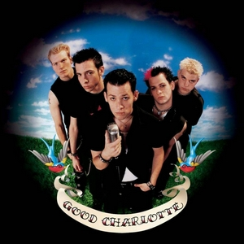
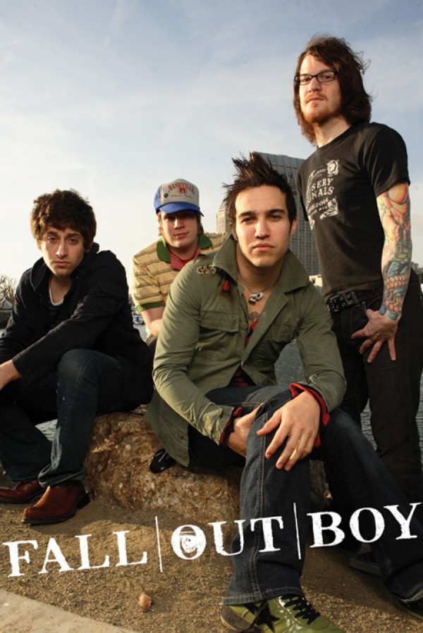
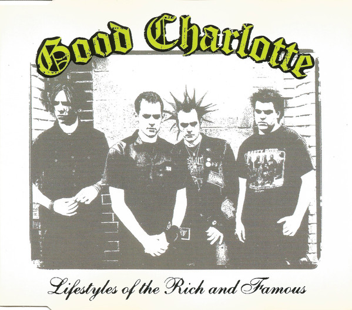
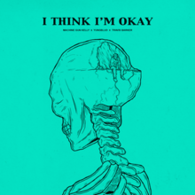
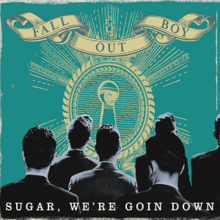

The Type Of Music I Listen To
I listen to music too much
I listen to music alot...and i mean ALOT. My spotify wrpped literally showed that i spent the equivelent of a whole of 32 days listening to music.
I would say i have a weird taste in music since i feel like most people my age like pop or hiphop but not me. I mean i don't mind HipHop
but i lterally only listen to 90s rap legends if i feel like HipHop any given day.
Favorite Genre:Pop Punk/Alternative
I don't know how i got into Pop Punk and Alt music since literally all my friends are Rap nerds but i guess it just happened.
The thing i like most about this genre is how open and how free it is, like to any other person it'll probably sound messy and
loud but this is exactly why i like it. I mentioned how i can only do my homework if i'm lstening to loud punk and this is completely true,
I just can't focus properly with softer music that i know most people listen to when working.
Favorite Artists/Bands: Machine Gun Kelly + Good Charllote + Fall Out Boy
I listen to a wide range of 2000s pop punk bands but Good Charllote and Fall Out Boy really stand out.
As for Machine Gun Kelly, he is probably my favorite artist right now and really for the past year.


What is my Favorite Song?
There are many songs that i absolutely love and i'm not trying to be basic but i really can't choose one.
However here are some of my top tracks :
I Think I'm Okay by MGK + Lifestyles of the Rich & Famous by Good Charllote + Sugar, We're Going Down by Fall Out Boy



I can't really explain my taste in music so just check out my playlist and make an opinion for yourselves about me